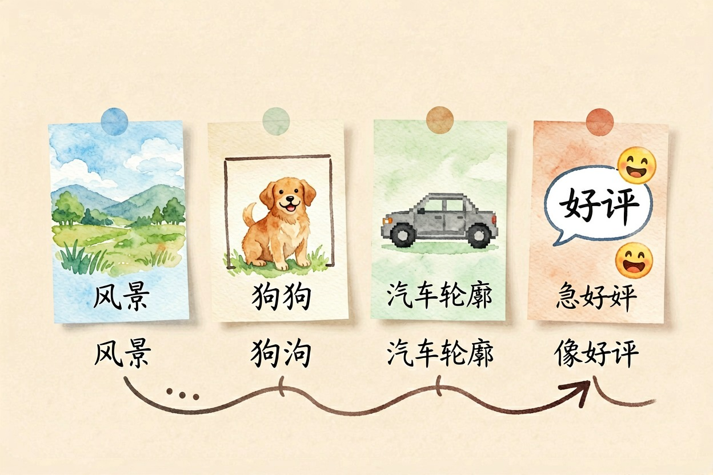
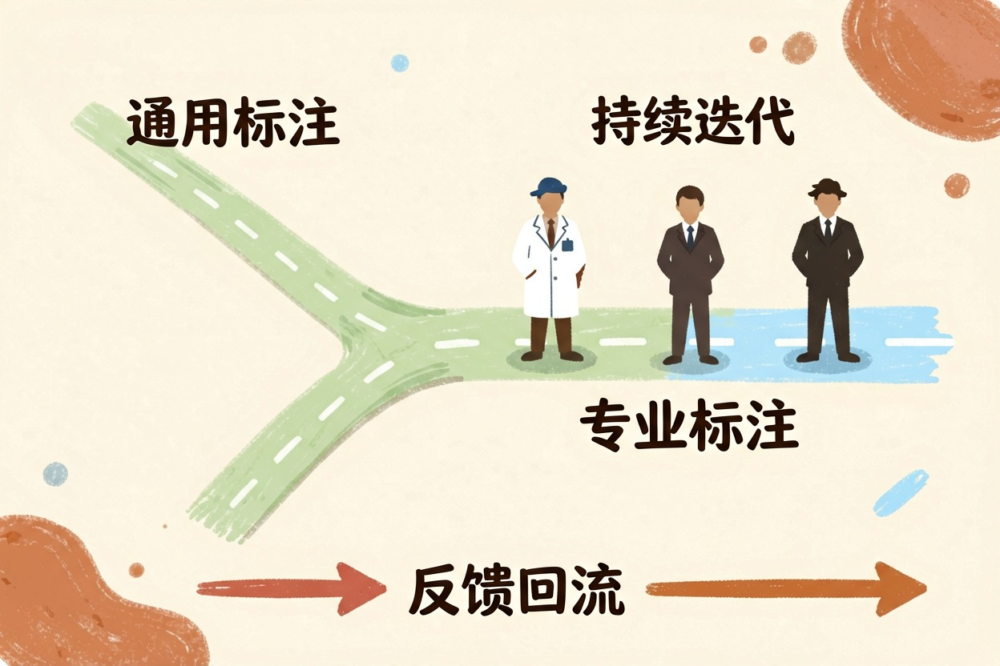

什么是数据标注？AI 背后那道人工工序 — Learntide
模型看起来聪明，功劳有一半属于那些默默给数据贴上答案的人，这道工序很少被提起。
什么是数据标注：给机器准备的教材
什么是数据标注？说白了，就是人工给数据贴上标准答案。哪块像素是猫，这段录音说了什么字，这条评论是夸还是骂 —— 机器分不清，得有人先教。
模型不会凭空开窍。它吃的是海量「原始数据 + 正确答案」配对，这些答案绝大多数出自人手。
算法、算力、数据是常说的三件套。前两样越来越像公共设施，谁都买得到。真正拉开差距的，往往是第三样的干净程度。
常见的标注类型有哪几种

按数据形态分，大致这么几类。
图像上最基础的是分类，整张图打一个标签。往上是画框，把目标圈出来并注明是什么。最费工的是分割，得沿轮廓一个像素一个像素抠。自动驾驶的三维点云更慢，一帧能耗掉半小时。
文本这边有情感倾向、实体识别、意图分类。语音是转写加时间轴对齐。
大模型时代还多出一类活：偏好排序。同一个问题，模型给两三个回答，人来排高下。
// 一条图像标注记录（JSONL 格式，每行一条）
{"image":"img_00417.jpg","boxes":[{"label":"dog","bbox":[120,88,310,402],"occluded":false}],"annotator":"a37","reviewed":true}
// 一条偏好排序记录，用于训练模型的回答风格
{"prompt":"帮我写一封辞职信","response_a":"...","response_b":"...","better":"b","reason":"语气得体，没有多余抒情"}后面这类，正是让模型学会说人话的关键燃料。
标注质量怎么决定模型的上限
有句老话在这行特别灵：垃圾进，垃圾出。
标准含糊，麻烦立刻就来。比如差评怎么定义，十个人能给出十种理解。反讽算不算，三星算好还是坏。规范里不写死，数据就会自相矛盾，模型只能学到一团糨糊。
所以正经团队会先熬一份标注规范，把边界案例列清。然后做交叉验证：同一批数据发给多人，看意见一致率。低于某个线，就得回炉重训。
数量也不是越多越好。十万条互相打架的标注，抵不上一万条干净的。
这一行的真实工作状态
它不体面，但很关键。
大部分标注岗按件计酬，重复度高，节奏紧。项目常外包到人力成本更低的地区，一线的人拿的是全链条里最薄的那层。争议也集中在这里：报酬、工时，还有内容安全审核那批人的心理损耗。
另一个变化是自动化在往上顶。模型先粗标一遍，人只挑错和修边界样本，行话叫预标注。活没消失，但入门那截确实在被压缩。
需求也在往上走。通用数据快见底了，稀缺的是专业领域数据 —— 病历、法条、工业质检图。这些得懂行的人来标，医生、律师、工程师亲自上手，单价高得多。
别把数据标注想得太简单

想入行的话，先看清两条路。
一条是量大价低的通用标注，门槛低，天花板也低，容易被工具替代。另一条是拿专业当筹码，标你本来就懂的东西。后者才谈得上积累。
还有个常见误解：以为标注只是训练前的一次性工序。实际它贯穿全程。上线后反馈继续回流，继续标、继续修，模型才能一直变好。
下次看到某个模型答得特别准，先别只夸算法。它背后大概率有一群人，日复一日地干着什么是数据标注这件不起眼的事。
本文信息核对于 2026-08-08。AI 产品的价格、免费额度与功能变动频繁，实际以各工具官网当前说明为准。